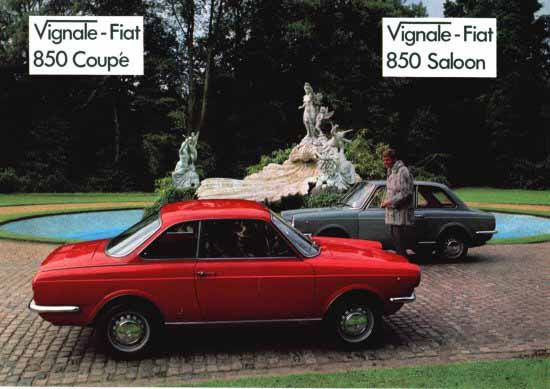

Carrozzeria Vignale · Fiat
Brochure Vignale 850

The F. Demetriou Group presents the Vignale-Fiat 850 Specials
The finest small cars in the world
The Vignale-Fiat 850 Special Saloon and Coupé are in a class of their own in the under-one-litre field. Styled by Alfredo Vignale and built by hand in his Turin coachworks, they offer elegance and comfort to the motorist who demands the advantages of comparatively small engine capacity and overall dimensions. The Saloon is a full four-seater, with a bench rear seat. The Coupé, with its sportier lines, is an exceptionally roomy two-plus-two. Both models have the new Fiat 850 Special engine which provides sparkling acceleration, Continental cruising in the eighties and amazing economy.
Saloon body
Two-door all-steel body with burst-proof door locks; wide-opening doors with warning lights in trailing edges; electric window lifts; opening front quarter lights; door armrests and map pockets; individual front seats; bench rear seat, back folds down to give extra luggage capacity; parcel shelf behind rear seat; full length console with companion box for rear passengers; hinged rear quarter lights; grab handles; courtesy and map light incorporated in rearview mirror; full-width parcel shelf; wood-rimmed steering wheel; electronic rev counter; cigar lighter; headlamp flasher; concealed interior release for boot catch; wraparound bumpers front and rear. Choice of 16 colours including six metallic, and five upholstery colours.
Coupé body
Semi-fastback two-plus-two steel body, otherwise identical to the Saloon.
Standard versions of both models are available without electric window lifts, rev counter, or metallic finish.
Technical data
Rear mounted four-cylinder 843cc engine, compression ratio 9.3:1, dual-choke carburettor, special anti-freeze coolant with translucent header tank, plastic cooling fan, recirculating exhaust system, synchromesh on all four forward gears. Independent suspension all round. Disc front brakes. Speed: 85mph.
Dimensions
Length 11ft 5½in, width 4ft 10½in, height 4ft 2½in, fuel tank 6½ gallons (approx.), turning circle 31ft 6in.
Sole importers and distributors of Vignale-Fiat cars in the United Kingdom and Ireland: F. Demetriou & Son Ltd., 73/9 Queensway, London W2. Tel: 01-229-9266/7. Cables: Demetrosi London W2.
A member of the F. Demetriou Group of Companies. Descriptions and illustrations on this leaflet are indicative only.